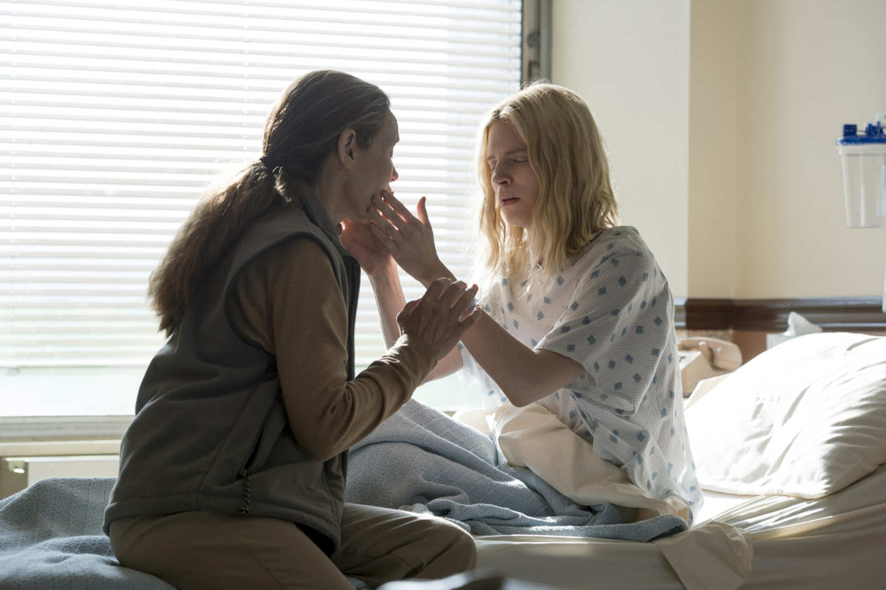
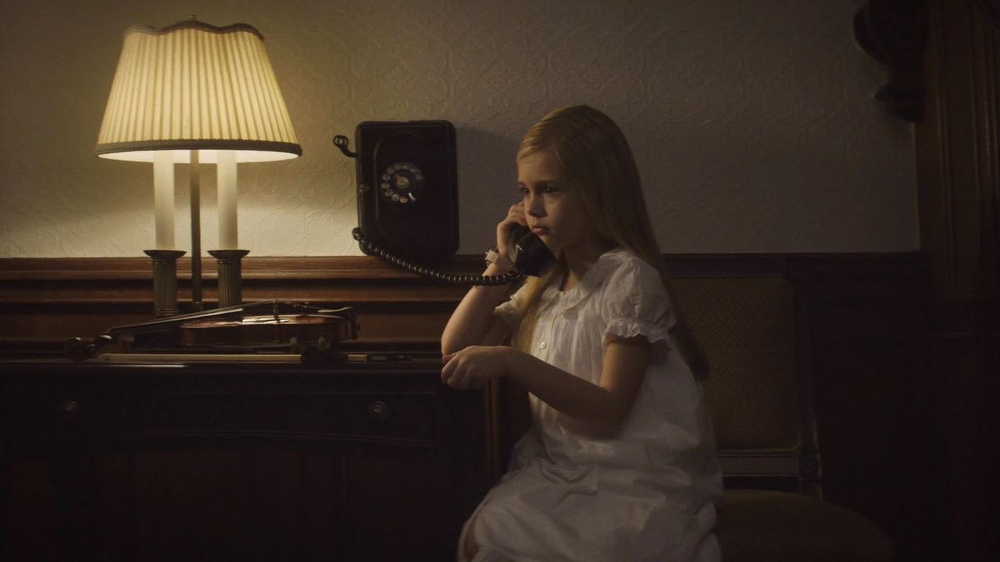
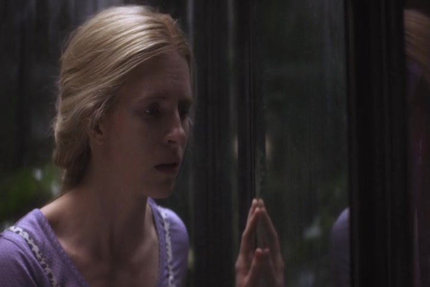
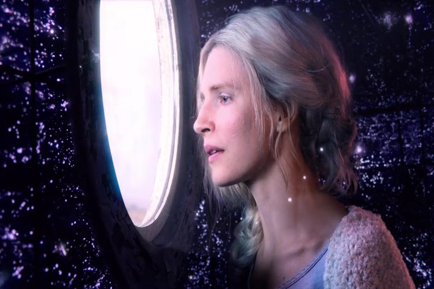
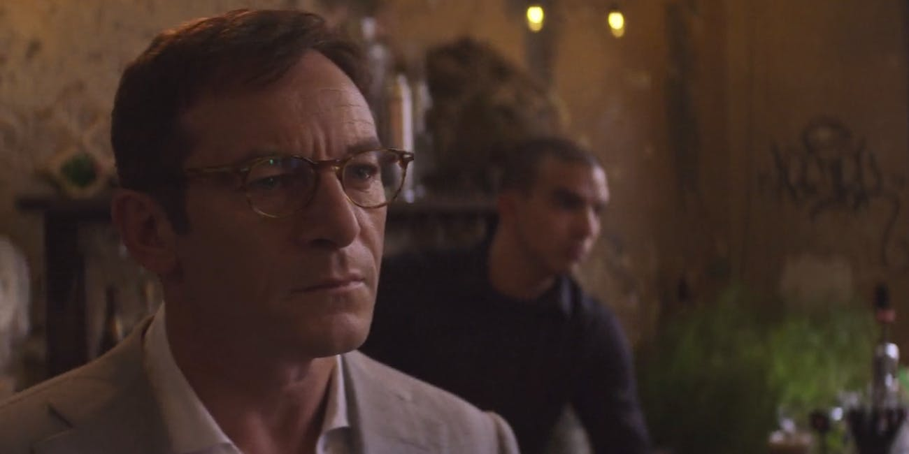
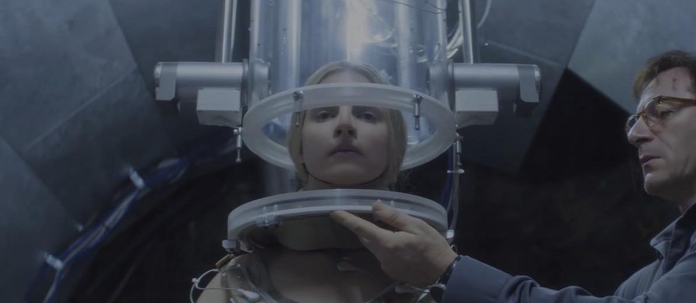
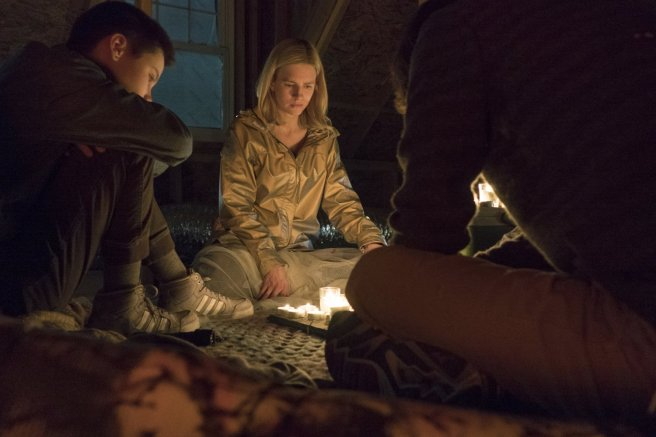
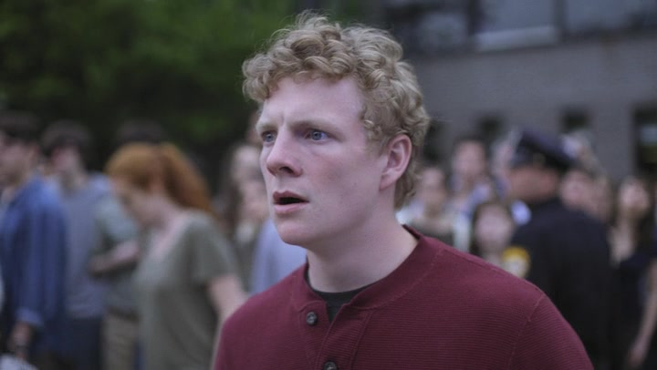

Epsiode 1 - Homecoming
 8.2 / 10
After 7 years missing, a blind girl, Prairie, is found and can now see. She also says her name is The OA, and a lot more mysteries surround her.
8.2 / 10
After 7 years missing, a blind girl, Prairie, is found and can now see. She also says her name is The OA, and a lot more mysteries surround her.

Epsiode 2 - New Colossus
8.3 / 10
The OA retraces the dramatic twists and turns in her life after a childhood accident, leading up to a fateful encounter far from home many years later.

Epsiode 3 - Champion
8.2 / 10
A journalist approaches the family with an offer. At Hap's, a bond is forged with Homer and the others as they hatch a desperate plan.

Epsiode 4 - Away
8.4 / 10
An agonizing dilemma gives OA a new perspective on the group's plight. Homer resolves to find out what Hap's experiments are really about.

Epsiode 5 - Paradise
8.4 / 10
While Hap zeroes in on a new test subject in Cuba, Homer and OA work to perfect their escape plan. Scott reaches his breaking point.

Epsiode 6 - Forking Paths
8.1 / 10
As the group continues its search for the final movement, a startling turn of events gives Hap's work a new urgency.

Epsiode 7 - Empire of Light
8.0 / 10
An ominous new dream and a tense outing with Nancy and Abel take a toll on OA. Steve finds his life in turmoil once again.

Epsiode 8 - Invisible Self
8.2 / 10
After OA recounts a dramatic final night at Hap's, the others begin to see her story in a new light. The fragments of the dream click into place.